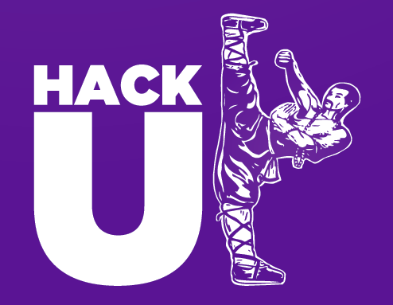
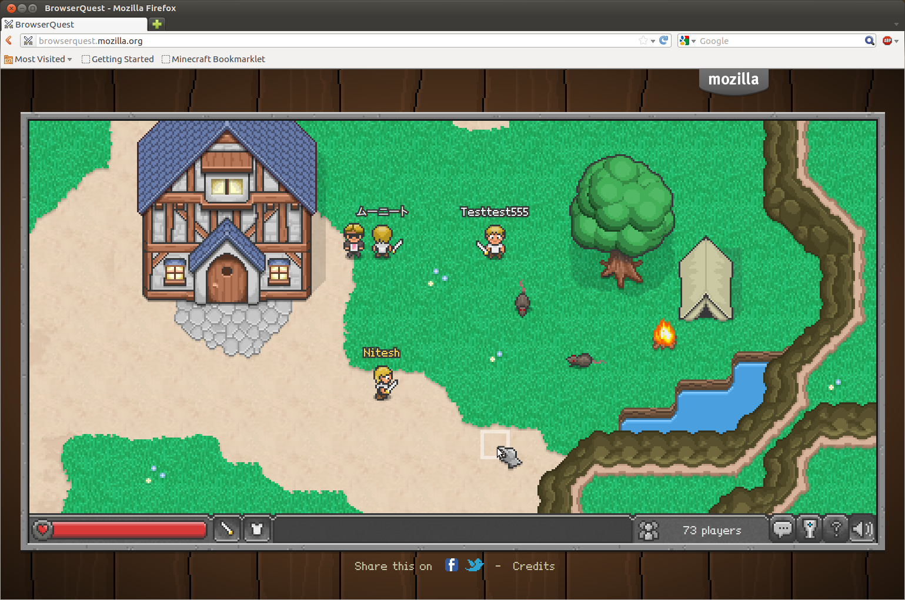

IIT Kanpur, 2012
by Nipun Saggar
Prototype-based, object-oriented scripting language.
Most popular language on GitHub: https://github.com/languages
JavaScript isn’t found on just websites.
Finally, there's Server-Side JavaScript.
Started in 1996: Netscape LiveWire.
Refined since then: AppJet, EtherPad, CommonJS.
Used in Yahoo!’s YQL.
Evented I/O for V8 JavaScript.
Easily create scalable network apps, like web servers.
Created in 2009.
Uses the V8 JavaScript engine from Google.
Node.js is used by Joyent, Yahoo!, Microsoft, LinkedIn, Uber, Mozilla, Voxer, AT&T & your hack.
Evented I/O for JavaScript.
console.log("Leonidas:Oh, I’ve chosen my words carefully, Persian. Perhaps you should have done the same.?");
setTimeout(function() {
console.log("Leonidas:This is Sparta!");
}, 1000);
console.log("Persian Messenger: This is Blasphemy! This is Madness!");
Leonidas:Oh, I’ve chosen my words carefully, Persian. Perhaps you should have done the same.? Persian Messenger: This is Blasphemy! This is Madness! Leonidas:This is Sparta!
var file = "/etc/redhat-release";
fs.stat(file, function(err, stat) {
if (stat.isFile()) {
fs.readFile(file, function(err, file) {
postRequest("http://example.com", file, function (err, response) {
if (response.status === 200) {
db.save(file, function (err) {
next();
});
}
});
});
}
});
var file = "/etc/redhat-release";
function onPost(err, response) {
if (response.status !== 200) throw err;
db.save(file, next);
}
function onRead(err, file) {
postRequest("http://example.com", file, onPost);
}
function onStat(err, stat) {
if (stat.isFile()) fs.readFile(file, onRead);
}
fs.stat(file, onStat);
Getting Started
Easy installers for Windows and OS X.
Easily compiled from source on Linux and Solaris.
Bundled with Node.js.
The package manager for Node.js modules.
npm install modulename
var foo = require('modulename');
Type node to start a REPL.
$ node
> console.log('Hello, Kanpur!');
Hello, Kanpur!
Control-D to quit.
Start a script file with node script.js.
What can you build with Node.js?
Node Recipes
var http = require('http');
http.createServer(
function (request, response) {
response.writeHead(200,
{'Content-Type': 'text/plain'});
response.end('Hello World\n');
}).listen(8000);
console.log('Started at
http://127.0.0.1:8000/');
Cross-browser WebSockets API. http://socket.io/
npm install socket.io
Server
var app = require('http').createServer(handler)
, io = require('socket.io').listen(app);
app.listen(8080);
function handler (request, response) {
response.writeHead(200, {'Content-Type': 'text/plain'});
response.end('Hello World\n');
}
io.sockets.on('connection', function (socket) {
socket.emit('news', { hello: 'world' });
socket.on('batman', function (data) {
console.log(data);
});
});
Client
var socket = io.connect('http://localhost:8080');
socket.on('news', function (data) {
console.log(data);
socket.emit('batman', { 'enemy': 'joker' });
});
Node.js is not a web server, it's a platform to make one.
Flexible web application framework. <http://expressjs.com/>
npm install express
var express = require('express');
var app = express();
app.get('/', function(req, res){
res.send('Yahoo!');
});
app.listen(3000);
Router, view rendering, configuration, etc.
npm install node-inspector
Works for any Node.js program. Handy!
node --debug-brk app.js
node-inspector
You can now debug your app in WebKit browser.
node --debug # Enable debug mode
node --debug-brk # Break on startup
npm install jsdom
Implementation of the W3C DOM. Headless browser!
var jsdom = require("jsdom");
jsdom.env("http://nodejs.org/dist/", [
'http://yui.yahooapis.com/3.5.0/build/simpleyui/simpleyui-min.js'
], function(errors, window) {
console.log("there have been",
window.Y.all("a").size(),
"nodejs releases!");
});
<https://github.com/tmpvar/jsdom>
npm install yui3
Run YUI on Node.js!
<https://github.com/davglass/nodejs-yui3>High-performance, device-independent HTML5 applications with Yahoo! Mojito.
<http://developer.yahoo.com/cocktails/mojito/>Talk to the **real world**.
eeeee eeeee eeeee eeee e eeeee
8 8 8 88 8 8 8 8 8 "
8e 8 8 8 8e 8 8eee 8e 8eeee
88 8 8 8 88 8 88 e 88 88
88 8 8eee8 88ee8 88ee 88 8ee88 8ee88
eeeee eeee eeeee e eeeee e eeeee eeeee eeeee eeeee
8 " 8 8 8 8 8 8 8 8 8 8 88 8 8 8
8eeee 8eee 8eee8e 8e 8eee8 8e 8eee8 8 8 8eee8e 8e
88 88 88 8 88 88 8 88 88 8 8 88 8 88
8ee88 88ee 88 8 88 88 8 88eee 88 8eee8 88 8 88
npm install serialport
Talk to physical devices, like an Arduino.
Get Inspired.
Real time log monitoring from your browser
<http://logio.org/>
A massively multiplayer HTML 5 game.
<http://browserquest.mozilla.org/>A R/C boat controlled from the web browser.
<http://bit.ly/nodeboat>